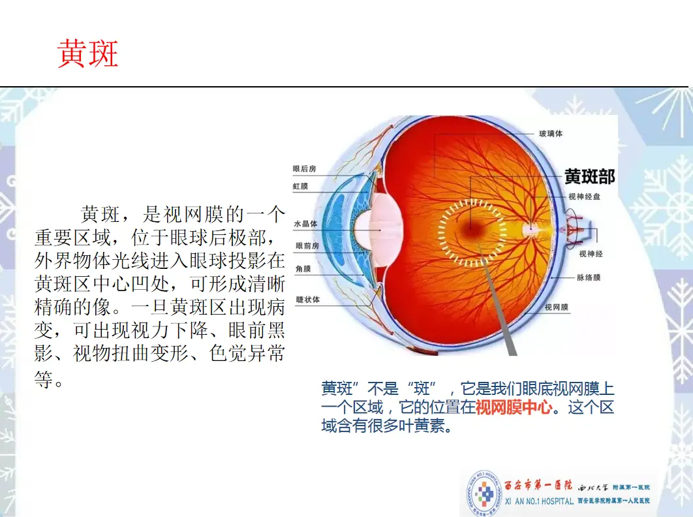
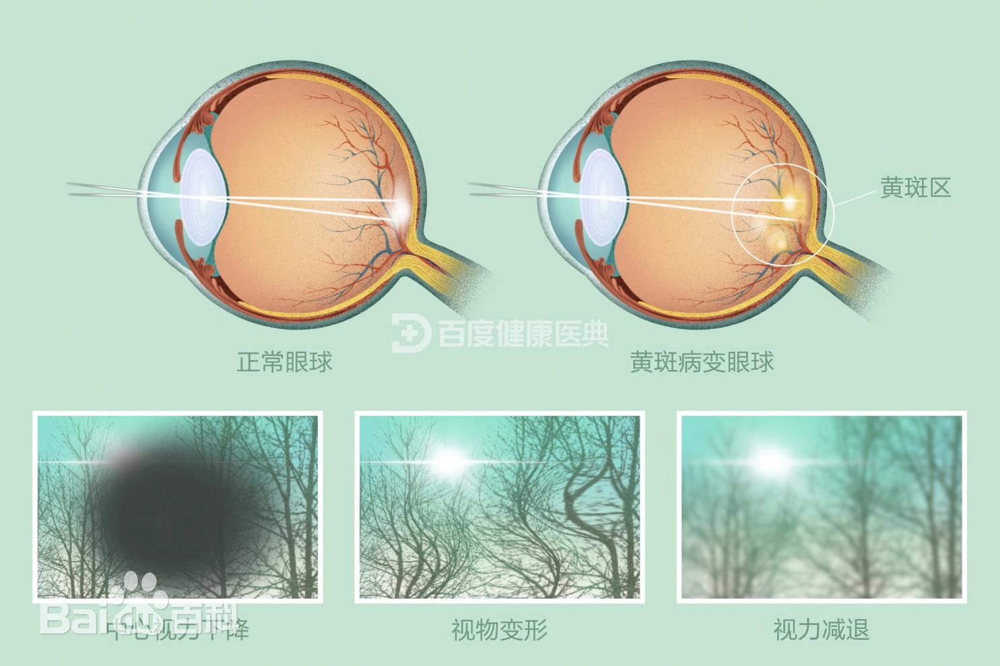

黄斑变性
危险程度
高风险
就医建议
及时就医检查
最佳就医时间
发现视物变形及时就医
什么是黄斑变性？
黄斑变性(AMD)是一种影响视网膜中央区域（黄斑）的进行性疾病，主要发生在老年人群中。它会导致中心视力的逐渐丧失，影响阅读、驾驶等需要精细视觉的活动。
关键特征：
- 中心视力下降
- 视物变形
- 视野中央暗点
- 色觉改变
黄斑变性分类
干性黄斑变性
进展缓慢，视力逐渐下降
湿性黄斑变性
进展快，需要及时治疗
早期AMD
可见玻璃膜疣，视力正常
晚期AMD
视力严重受损，需要及时干预
图示说明：
图1：黄斑变性发病机制示意图

上图展示了黄斑变性的发病机制
图2：正常眼睛与黄斑变性对比图

上图展示了正常眼睛与黄斑变性的对比
主要症状
视觉症状
视物变形
直线看起来弯曲
中心暗点
视野中央出现黑点
视力下降
中心视力逐渐模糊
色觉改变
色彩感知减退
进展特点
早期
视力正常，可见玻璃膜疣
中期
出现视物变形，视力下降
晚期
中心视力严重受损
治疗方法
药物治疗
- 抗VEGF注射
- 营养神经药物
- 抗氧化剂补充
激光治疗
- 光动力疗法
- 激光光凝术
- 经瞳孔温热疗法
视觉康复
- 低视力助视器
- 视觉训练
- 生活技能训练